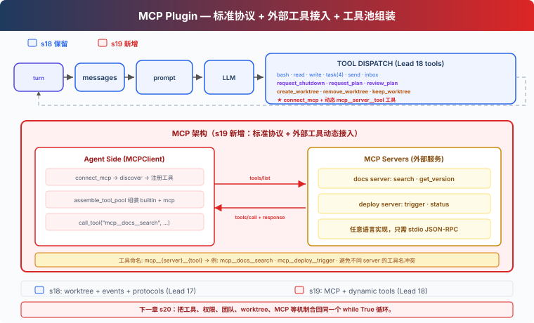

s19: MCP Tools — 外接工具，标准协议
"外接工具, 标准协议" — 发现、组装、调用，Agent 不需要知道工具是谁写的。 Harness 层: 插件 — 外部能力通过标准协议接入。
On this page
s01 → ... → s17 → s18 → s19 → s20
"外接工具, 标准协议" — 发现、组装、调用，Agent 不需要知道工具是谁写的。
Harness 层: 插件 — 外部能力通过标准协议接入。
问题
s01 到 s18，Agent 的所有工具都是手写的——bash、read、write、task、worktree。每个工具的输入验证、执行逻辑、错误处理，都是你一行行写的。
现在你有 3 个外部服务想接入：公司的 Jira API（查 issue、建 ticket）、自建的部署系统（触发 deploy、看日志）、团队的 Notion 知识库（搜文档、建页面）。你不想为每个服务重写一套工具代码。
你需要一个标准协议——外部服务只要实现它，Agent 就能直接调用，不管服务用什么语言写的。
解决方案

MCP（Model Context Protocol）定义了 Agent 如何发现和调用外部工具。核心概念：
| 概念 | 作用 |
|---|---|
| MCPClient | Agent 端的客户端，连接 server、发现工具、调用工具 |
| MCP Server | 外部服务，实现 tools/list + tools/call |
| assemble_tool_pool | 把内置工具和 MCP 工具组装成一个工具池 |
| mcp__server__tool 命名 | 避免不同 server 的工具名冲突 |
沿用 s18 的教学版 worktree 隔离、自主认领、空闲轮询、协议系统。本章新增：connect_mcp 工具——连接外部服务，发现工具，加入工具池。
教学版用 mock handler 模拟外部 server。真实版会启动子进程，通过 stdin/stdout 发送 JSON-RPC 请求。mock 的好处是不依赖外部服务就能跑完整流程；代价是你看不到真正的网络通信和进程管理。
工作原理
MCPClient：发现 + 调用
class MCPClient:
def __init__(self, name: str):
self.name = name
self.tools: list[dict] = []
self._handlers: dict[str, callable] = {}
def register(self, tool_defs, handlers):
"""Simulates tools/list discovery."""
self.tools = tool_defs
self._handlers = handlers
def call_tool(self, tool_name: str, args: dict) -> str:
"""Simulates tools/call."""
handler = self._handlers.get(tool_name)
if not handler:
return f"MCP error: unknown tool '{tool_name}'"
return handler(**args)
教学版用 Python 函数模拟 server 的工具实现。真实版通过 stdio JSON-RPC 与子进程通信。
connect_mcp：连接 + 发现
def connect_mcp(name: str) -> str:
if name in mcp_clients:
return f"MCP server '{name}' already connected"
factory = MOCK_SERVERS.get(name)
if not factory:
return f"Unknown server '{name}'. Available: ..."
mcp_client = factory()
mcp_clients[name] = mcp_client
return f"Connected to '{name}'. Discovered: ..."
连接后，server 提供的工具立即可用。
normalize_mcp_name：名称规范化
_DISALLOWED_CHARS = re.compile(r'[^a-zA-Z0-9_-]')
def normalize_mcp_name(name: str) -> str:
return _DISALLOWED_CHARS.sub('_', name)
所有非 [a-zA-Z0-9_-] 的字符替换为 _。防止 server 名或工具名中包含特殊字符导致命名冲突或注入问题。
assemble_tool_pool：组装工具池
def assemble_tool_pool() -> tuple[list[dict], dict]:
tools = list(BUILTIN_TOOLS)
handlers = dict(BUILTIN_HANDLERS)
for server_name, mcp_client in mcp_clients.items():
safe_server = normalize_mcp_name(server_name)
for tool_def in mcp_client.tools:
safe_tool = normalize_mcp_name(tool_def["name"])
prefixed = f"mcp__{safe_server}__{safe_tool}"
tools.append(...)
handlers[prefixed] = (
lambda *, c=mcp_client, t=tool_def["name"], **kw:
c.call_tool(t, kw))
return tools, handlers
前缀 mcp__{server}__{tool} 避免不同 server 的工具名冲突。名称经过 normalize_mcp_name 规范化。
MCP 工具的 description 带 (readOnly) 或 (destructive) 标注——教学版用文本标注，真实 CC 用 tool annotations 结构体让权限系统判断。
无缓存：工具池变了，prompt 也变
s10-s18 的 agent_loop 用 prompt cache 避免重复序列化。s19 去掉了缓存：
def agent_loop(messages, context):
tools, handlers = assemble_tool_pool() # 每次重新构建
system = assemble_system_prompt(context) # 每次重新生成
...
if any(b.name == "connect_mcp" ...):
tools, handlers = assemble_tool_pool() # 连接后重建
system = assemble_system_prompt(context)
原因：connect_mcp 之后工具池变化了——新增了 mcp__docs__search 等工具。缓存中的工具列表是旧的，继续用会导致模型调用不到新工具。教学版直接去掉缓存，代价是多花一点序列化时间。
MCP 工具只有 Lead 可用
教学版中，connect_mcp 是 Lead 工具，assemble_tool_pool 也只服务于 Lead 的 agent_loop。Teammate 仍使用固定的 8 个子集工具（bash、read_file、write_file、send_message、submit_plan、list_tasks、claim_task、complete_task）。
这是教学简化。真实 CC 中，MCP 工具对主 agent 和子 agent 都可用——子 agent 继承父级的 MCP 配置。
相对 s18 的变更
| 组件 | 之前 (s18) | 之后 (s19) |
|---|---|---|
| 工具来源 | 全部手写 builtin | 手写 + MCP 外部工具动态发现 |
| 工具池 | 固定 BUILTIN_TOOLS | assemble_tool_pool 动态组装 mcp__ 前缀工具 |
| 名称安全 | 无 | normalize_mcp_name 规范化 |
| 新类型 | — | MCPClient 类（模拟 tools/list + tools/call） |
| 命名空间 | — | mcp__server__tool 避免冲突 |
| 工具描述 | 无标注 | (readOnly)/(destructive) 标注 |
| prompt 缓存 | 有（s10 起） | 去掉——工具池动态变化后缓存失效 |
| Lead 工具 | 17 (s18) | 18 (+connect_mcp) |
| Teammate 工具 | 8 (s18) | 8（不变，MCP 工具仅 Lead 可用） |
| 扩展方式 | 写代码加工具 | 标准协议，任意语言实现 server |
试一下
cd learn-claude-code
python s19_mcp_plugin/code.py
试试这些 prompt：
Connect to the docs MCP server and search for somethingConnect to the deploy server and trigger a deploymentConnect both servers — what tools are now available?
观察重点：连接 MCP server 后，工具名是否带 mcp__docs__ 或 mcp__deploy__ 前缀？两个 server 的工具是否同时可用？MCP 工具的 description 是否带 (readOnly)/(destructive) 标注？
接下来
现在 Agent 可以通过标准协议接入外部工具了。但前面 19 章每章都只加一个机制，真实 Agent 不会这样拆开运行。
工具、权限、hooks、todo、任务图、记忆、压缩、后台、cron、团队、worktree、MCP 这些机制应该挂在同一个循环上，而不是散在 19 个 demo 里。
s20 Comprehensive Agent → 把前 19 章的机制合回一个完整 harness。机制很多，循环一个。
深入 CC 源码
> 以下基于 CC 源码 `services/mcp/client.ts`、`auth.ts`、`config.ts`、`channelNotification.ts` 的分析。 ### 一、6 种 Transport 类型 教学版只展示了 stdio mock。CC 支持 6 种传输（`types.ts:23-25`）： | Transport | 通信方式 | |-----------|---------| | `stdio` | 子进程 stdin/stdout（跨平台默认） | | `sse` | HTTP Server-Sent Events | | `http` | Streamable HTTP（POST/SSE 双向） | | `ws` | WebSocket | | `sse-ide` | IDE 内嵌 SSE 传输 | | `sdk` | 进程内 SDK 传输 | 连接时本地（stdio）和远程（http/sse/ws）服务器分批并发：本地批量 3 个，远程批量 20 个。 ### 二、工具池组装算法 `assembleToolPool()`（`tools.ts:345-364`）：// 去重时优先保留内置工具（name 相同时内置在前）
return uniqBy(
[...builtInTools.sort(byName), ...filteredMcpTools.sort(byName)],
'name',
)
mcp__<normalizedServerName>__<normalizedToolName>
claude.ai 连接器 < plugin < user settings.json < approved project .mcp.json < local settings.local.json